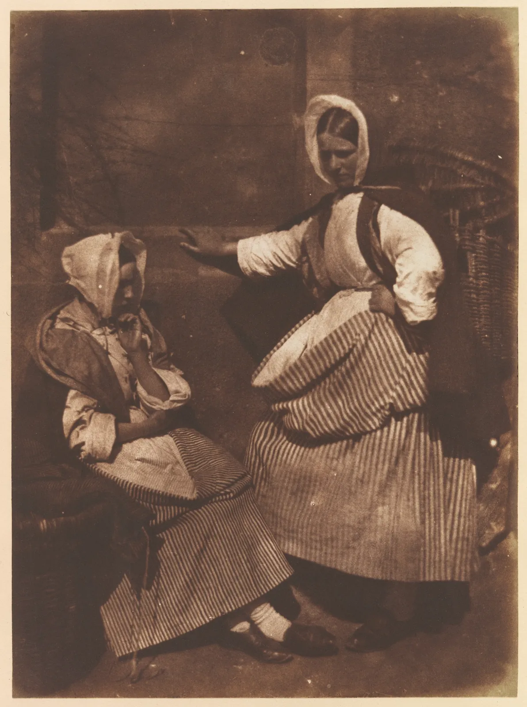
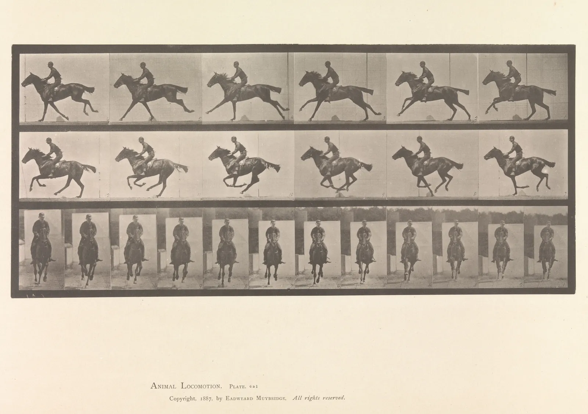

사진의 구도와 자르기
같은 서점에서 같은 휴대폰으로 찍었는데, 어떤 사진은 정돈되어 보이고 어떤 사진은 어수선하다. 주인의 머리 뒤에서 가로등이 솟아 있고, 지평선이 기울어 있고, 지나가던 사람은 화면 가장자리에 반쯤 걸려 있다. 그림이라면 지우고 다시 그리면 된다. 사진은 그럴 수 없다. 그림은 빈 종이에 하나씩 더해 가며 화면을 만들고, 사진은 이미 꽉 찬 세상에서 네모 하나를 골라 낸다. 그래서 사진의 구도는 손보다 발, 무릎, 손목으로 먼저 잡는다. 이 장은 셔터를 누르기 전에 정하는 구도와, 누른 뒤에 하는 자르기와 고르기를 다룬다.
- 사진가가 바꿀 수 있는 것(자리, 높이, 방향, 순간, 자르기)과 바꿀 수 없는 것을 구별한다.
- 카메라를 옆으로 옮기면 가까운 것과 먼 것이 서로 다르게 움직이는 시차를 계산해, 주인공 머리 뒤의 겹침을 한 걸음으로 푼다.
- 수평으로 든 카메라에서는 지평선이 카메라 높이를 지난다는 기하를 이용해 카메라 높이를 고른다.
- 시선과 움직임 앞의 공간, 가장자리 접선을 점검하고, 일부러 깨는 경우를 구별한다.
- 기울기 보정과 비율 변경이 버리는 넓이를 계산하고, 연속 사진에서 한 장을 고르는 기준과 시리즈의 구도 규칙을 만든다.
그리기는 더하고, 찍기는 고른다
형태와 구도의 원리는 그림이든 사진이든 같다. 시각적 무게가 균형을 이루는 방식(CompositionBook 7장), 시선이 흐르는 길(5장), 비율과 자르기(11장)는 사진에서도 그대로 통한다. 다른 것은 그 원리를 손에 쥐는 방법이다. 화가는 나무를 오른쪽으로 옮기고 싶으면 나무를 오른쪽에 그린다. 사진가는 나무를 옮길 수 없으니 자기 몸을 옮긴다. 나무가 화면 오른쪽으로 가도록 왼쪽으로 걸어가거나, 나무가 빠지도록 몸을 틀거나, 나무가 작아지도록 물러선다.
그래서 사진의 구도는 "무엇을 어디에 놓을까"보다 "어디에 설까"에 가깝다. 사진가가 대체로 바꿀 수 있는 것은 다음 다섯 가지다.
- 자리: 왼쪽·오른쪽, 앞·뒤로 옮긴다. 가까운 것과 먼 것의 겹침이 바뀐다(이 장 2절). 거리가 원근을 정하는 이야기는 6장에서 했다.
- 높이: 서서, 앉아서, 바닥에 엎드려, 계단 위에서 찍는다. 지평선이 화면의 어디를 지나는지, 주인공 뒤에 무엇이 오는지가 바뀐다(3절).
- 방향: 카메라를 어디로 돌리는가. 주인공이 화면의 어디에 오는지, 시선 앞에 얼마나 공간이 남는지가 바뀐다(4절).
- 순간: 언제 누르는가. 움직이는 대상은 한순간마다 다른 그림이다(6절).
- 자르기: 찍은 뒤에 프레임을 다시 정한다. 다만 버린 화소는 돌아오지 않는다(5절).
초점거리(5장)와 초점·심도(7장)도 화면을 바꾸지만, 이 장에서는 렌즈를 바꾸지 않고 몸으로 하는 구도를 먼저 본다.
"좋은 사진은 발로 찍는다"는 말이 사진 수업에서 흔히 오간다. 줌 렌즈를 돌리거나 나중에 자르는 것으로는 바꿀 수 없는 것, 곧 가까운 것과 먼 것의 겹침과 위치 관계가 카메라의 자리에서 정해지기 때문이다. 다음 절부터 그 자리를 하나씩 움직여 본다.
배경 정리: 한 걸음 옆으로
사진을 처음 찍는 사람은 주인공만 본다. 파인더 안의 얼굴이 웃고 있는지, 초점이 맞았는지에 정신이 팔려 그 뒤에 무엇이 있는지 보지 못한다. 그러다 사진을 열어 보면 주인의 머리 꼭대기에서 가로등이 솟아 있다. 이렇게 배경의 선이나 형이 주인공에 붙어 하나의 형처럼 읽히는 것을 흔히 겹침(Merger)이라 부른다. 사진 수업에서 쓰는 이름이며, 형과 바탕이 엉키는 문제(CompositionBook 3장)가 사진에서 가장 흔하게 나타나는 모습이다.
한 걸음 옆으로 가면 왜 가로등이 비켜날까. 카메라를 옆으로 옮기면 화면 속의 모든 것이 반대쪽으로 움직이지만, 가까운 것은 많이, 먼 것은 조금 움직인다. 기차 창밖에서 가까운 전봇대는 휙휙 지나가고 먼 산은 천천히 흐르는 것과 같은 현상이고, 이것을 시차(Parallax)라고 한다. 주인공과 배경이 서로 다른 속도로 움직이니, 카메라를 조금만 옮겨도 둘의 겹침이 풀린다. 얼마나 옮겨야 하는지는 간단한 비례로 계산할 수 있다.
식에서 두 가지를 읽을 수 있다. 배경이 멀수록(\(Z_b\)가 클수록) 괄호 안이 1에 가까워져, 옮긴 만큼 거의 그대로 비켜난다. 반대로 배경이 주인공 바로 뒤에 붙어 있으면(\(Z_b \approx Z_s\)) 아무리 옮겨도 둘은 함께 움직인다. 벽에 붙어 선 사람 뒤의 액자는 걸어서는 피할 수 없고, 사람을 벽에서 떼어 놓아야 한다. 아래 시뮬레이터에서 지도 위의 카메라를 좌우로 끌어 본다.
한 걸음 옆으로: 머리 뒤의 가로등
가운데에서 오른쪽으로 40~50 cm쯤 옮기면 가로등이 머리에서 떨어진다. 큰 걸음 한 번이다. 아래는 같은 방향으로 든 카메라를 가운데와 오른쪽 45 cm에서 찍은 두 장을 겹친 것이다. 경계선을 오른쪽으로 끌면 가운데 자리의 사진이 드러난다.
멀리 있는 외벽과 간판은 거의 그대로인데, 가까운 주인은 화면에서 왼쪽으로 크게 움직였다. 가로등은 그 중간쯤 움직여 주인의 머리 오른쪽으로 비켜났다. 시차가 거리마다 다르다는 것이 한눈에 보인다. 겹침을 푸는 방법은 옆으로 가는 것만이 아니다. 무릎을 굽혀 낮추면 머리가 하늘이나 단순한 벽 앞으로 올라가고(3절), 다가가면 주인공이 커져 배경이 차지하는 넓이가 줄고, 조리개를 열어 배경을 흐리면 겹친 형의 윤곽이 약해진다(7장). 그리고 가장 확실한 방법은 실제로 치우는 것이다. 탁자 위의 컵, 바닥의 상자, 창에 붙은 낡은 공지는 카메라를 옮기는 것보다 치우는 편이 빠르다.
높이와 각도
대부분의 사진은 서 있는 사람의 눈높이, 곧 바닥에서 1.5 m 안팎에서 찍힌다. 그래서 눈높이 사진은 익숙하고 중립적으로 보인다. 같은 장면도 무릎 높이에서 찍으면 아이나 고양이가 보는 세상이 되고, 계단 위에서 내려다보면 지도처럼 정리된 세상이 된다. 높이는 분위기만 바꾸는 것이 아니라, 화면 안의 기하를 바꾼다.
핵심은 한 문장이다. 카메라를 수평으로 들면, 지평선은 카메라 높이에 있는 모든 것을 지난다. 카메라 높이가 1.5 m면 지평선은 가까운 사람이든 먼 사람이든 바닥에서 1.5 m인 곳, 곧 대개 눈 근처를 지난다. 카메라를 1 m로 낮추면 지평선은 모든 사람의 허리께로 내려간다. 거리와 상관이 없다. 이 성질은 드로잉의 투시에서 눈높이선이 하는 일과 같다(DrawingBook 4장).
이 기하를 알면 배경을 고르는 데 쓸 수 있다. 서점 앞에서 주인을 찍을 때 카메라를 낮추면 주인의 머리가 지평선보다 높이 올라가고, 그 뒤에는 건물 대신 하늘이 온다. 하늘은 가장 단순한 배경이다. 반대로 카메라를 높이 들면 주인의 머리가 지평선 아래로 내려가 머리 뒤에 길바닥이 온다. 이것도 단순한 배경이 될 수 있다. 아래 시뮬레이터에서 카메라 높이를 바꿔 본다. 주인공은 5 m 앞에, 다른 사람들은 그 뒤 여러 거리에 서 있다.
카메라 높이와 지평선
지평선이 사람의 어디를 지나는지는 그 사람을 보는 눈높이를 그대로 말해 준다. 지평선이 눈을 지나면 마주 보는 사이, 무릎을 지나면 올려다보는 사이, 머리 위를 지나면 내려다보는 사이다. 아이를 찍을 때 아이 눈높이로 앉으라는 조언은 이 관계를 바꾸려는 것이다. 위에서 찍으면 아이가 작고 귀여워 보이지만, 아이 눈높이에서 찍으면 아이의 세상 안에 들어간 사진이 된다. 어느 쪽이 옳은지는 정해져 있지 않다. 무엇을 말하려는지에 맞추면 된다.
바로 위에서 내려다보는 높이도 있다. 탁자 위의 책, 찻잔, 귤 같은 물건을 수직으로 내려다보고 찍으면 원근이 사라지고 물건들이 지도처럼 평평하게 늘어선다. 이렇게 찍은 사진을 흔히 플랫레이(Flat lay)라 부른다. 원근이 없으니 화면은 그림이나 지면 구성에 가까워지고, 균형과 간격, 리듬(CompositionBook 8장)을 그대로 적용할 수 있다.
시선과 앞 공간
화면 속 사람이 어딘가를 보고 있으면, 보는 사람의 눈도 그 방향으로 따라간다. 시선과 몸짓, 움직이는 방향은 화면 안에서 보이지 않는 선이 된다(CompositionBook 5장). 그래서 사진가들은 오래전부터 사람이 바라보는 쪽, 걸어가는 쪽에 공간을 남기라고 가르쳐 왔다. 이 공간을 흔히 앞 공간(Lead room, Nose room)이라 부른다. 영상 촬영에서도 같은 관례를 쓴다.
아래 두 화면은 같은 사람을 같은 자리에 둔 것이다. 다른 것은 얼굴의 방향뿐이다.
왼쪽: 사람이 화면 바깥(가까운 테두리)을 본다. 오른쪽: 같은 자리에서 화면 안쪽을 본다. 바깥을 보는 사람은 테두리에 코를 박은 듯 답답해 보이고, 보는 사람의 눈은 사람의 시선을 따라 화면 밖으로 빠져나간다. 안쪽을 보면 시선이 넓은 쪽 화면을 가로지르며 눈을 화면 안에 붙잡는다.
그렇다면 앞 공간은 얼마나 남겨야 할까. 정해진 값은 없다. 흔히 쓰는 출발점은 사람을 3분할선 근처에 두어 앞 공간이 뒤 공간의 두 배쯤 되게 하는 것이다. 아래 시뮬레이터에서 사람을 끌어 옮기고 얼굴 방향을 바꿔 본다.
시선 앞의 공간
관례는 이유를 알면 깰 수 있다. 앞 공간을 없애고 뒤 공간을 크게 남기면, 사람이 지나온 길이나 떠나는 모습이 강조된다. 화면 밖의 무언가를 피하는 듯한 불안, 막다른 곳에 선 답답함, 이미 지나간 시간 같은 느낌을 일부러 만들 때 쓴다. 관례대로 찍은 사진 열 장 사이에 이런 사진 한 장이 있으면 그 한 장이 눈에 띈다. 다만 그 한 장은 "실수로 그렇게 됐다"가 아니라 "일부러 그렇게 했다"로 읽혀야 한다. 대개 사람을 테두리에 아주 바짝 붙이거나 뒤 공간을 넓고 비게 두어, 어중간하지 않게 만든다.

자르기와 비율: 처음부터 그 비율로
찍은 뒤의 자르기(Crop)는 사진가에게 주어진 두 번째 기회다. 가장자리의 군더더기를 덜고, 비율을 바꾸고, 기울어진 수평을 바로잡는다. 하지만 자르기는 늘 화소를 버리는 일이고, 버리는 양은 계산할 수 있다. 원본의 가로÷세로가 \(R\), 자를 비율이 \(r\)일 때 가장 크게 자르면 넓이의 \(\min(r,R)/\max(r,R)\)이 남는다(CompositionBook 11장의 식). 카메라마다 센서의 기본 비율이 다르다는 점이 여기에 더해진다. 미러리스와 DSLR의 많은 센서는 3:2, 휴대폰 카메라의 기본 화면은 대개 4:3이다.
| 자를 비율 | 3:2 가로에서 | 2:3 세로에서 | 4:3 가로에서 | 3:4 세로에서 |
|---|---|---|---|---|
| 1:1 | 67% | 67% | 75% | 75% |
| 4:5 세로 | 53% | 83% | 60% | 94% |
| 9:16 세로 | 38% | 84% | 42% | 75% |
| 16:9 가로 | 84% | 38% | 75% | 42% |
표에서 가장 큰 차이는 카메라를 세웠는가 눕혔는가에서 난다. SNS의 세로 4:5 게시물을 가로로 찍은 3:2 사진에서 자르면 넓이의 절반 가까이를 버리지만, 처음부터 세로로 찍으면 83%가 남는다. 버리는 화소의 양만이 문제가 아니다. 가로 사진에서 세로로 자르면 주인공 주변의 여유가 모두 사라지고, 촬영할 때 본 화면과 전혀 다른 화면이 된다. 쓸 비율이 정해져 있다면 처음부터 그 비율로 보고 찍는 것이 가장 정확한 자르기다. 휴대폰과 많은 카메라는 화면에 원하는 비율의 테두리를 띄우는 설정이 있다.
자르기가 버리는 넓이는 비율을 바꿀 때만 생기지 않는다. 기울어진 수평을 바로잡을 때도 생긴다. 사진을 \(\theta\)만큼 돌리면 네 귀퉁이에 빈 삼각형이 생기므로, 같은 비율을 유지하려면 안쪽으로 들어가 다시 잘라야 한다. 같은 비율로 남길 수 있는 가장 큰 사각형의 크기는 다음과 같다.
식은 직사각형이 길쭉할수록 같은 각도에서 더 많이 잃는다는 것을 보여 준다. 긴 변이 돌면서 짧은 쪽 테두리를 크게 침범하기 때문이다. 아래 시뮬레이터에서 기울어진 사진을 바로잡아 본다.
수평 보정의 대가
수평이 1~2° 틀어진 사진은 실수로 보이기 쉽다. 사람의 눈은 수평과 수직에 아주 민감해서, 작은 기울기를 "기울였다"보다 "삐뚤어졌다"로 읽는다. 반대로 20~30°쯤 과감하게 기울인 사진은 의도로 읽힌다. 영화에서 불안과 혼란을 보여 줄 때 쓰는 기울인 화면을 흔히 더치 앵글(Dutch angle)이라 부른다. 여기서도 원칙은 같다. 맞출 거면 정확히 맞추고, 깰 거면 분명히 깬다.
연속 사진에서 고르기
움직이는 대상은 매 순간 다른 그림이다. 걷는 사람의 다리는 모였다 벌어지고, 웃는 얼굴은 눈을 감았다 뜨고, 책장을 넘기는 손은 한순간만 종이를 들어 올린다. 프랑스 사진가 앙리 카르티에브레송(Henri Cartier-Bresson, 1908–2004)의 1952년 사진집 『은밀하게 찍은 이미지』(Images à la sauvette)는 영어판 제목이 『결정적 순간』(The Decisive Moment)이었고, 이 말은 사진에서 형태와 사건이 한꺼번에 맞아떨어지는 한순간을 가리키는 표현으로 널리 퍼졌다.
오늘날의 카메라는 1초에 여러 장을 찍는 연속 촬영(Burst, 연사)을 쉽게 한다. 그러면 결정적 순간을 "잡는" 일이 결정적 순간을 "고르는" 일로 바뀐다. 필름 시대 사진가들은 현상한 필름을 인화지 위에 그대로 얹어 한 장에 모든 칸을 찍은 밀착 인화(Contact sheet)를 놓고, 돋보기로 한 칸씩 보며 고를 칸에 연필 표시를 했다. 지금은 화면에서 넘겨 보며 고르지만, 고르는 기준은 그때와 같다.

연속 사진에서 고를 때 흔히 보는 것은 세 가지다. 첫째, 몸짓의 정점. 걸음은 다리가 가장 크게 벌어졌을 때, 점프는 가장 높이 떴을 때, 손짓은 가장 멀리 뻗었을 때 가장 잘 읽힌다. 다리가 모인 순간의 걷는 사람은 그냥 서 있는 사람처럼 보인다. 둘째, 배경과의 관계. 같은 연사 안에서도 사람이 창틀이나 기둥과 겹치는 칸과 비켜난 칸이 있다. 셋째, 화면 안의 자리. 움직이는 사람은 칸마다 자리가 달라지므로 앞 공간도 달라진다. 아래 시뮬레이터는 책방 창 앞을 지나가는 사람을 연사로 찍은 것이다. 연사 속도를 바꾸고, 아래 띠에서 칸을 골라 본다.
연사에서 한 장 고르기
칸이 많다고 고르기가 쉬워지지는 않는다. 비슷한 칸 수십 장 사이에서 망설이다 보면 차이를 보는 눈이 오히려 흐려진다. 그래서 고르는 순서를 미리 정해 두는 편이 낫다.
시리즈: 한 장이 아니라 아홉 장
SNS 계정이나 웹사이트의 사진은 한 장씩 보이기도 하지만, 목록에서는 여러 장이 격자로 함께 보인다. 따로 보면 괜찮은 사진들도 나란히 놓으면 어수선할 수 있다. 하나는 기울었고, 하나는 위에서 내려다보고, 하나는 정사각형이고, 하나는 노랗고 하나는 파랗다. 시리즈(Series)로 찍는다는 것은 몇 가지를 일부러 같게 두어, 나머지 다른 것들이 내용으로 읽히게 하는 일이다.
시리즈에서 흔히 같게 두는 것은 비율, 카메라 높이, 수평·수직의 처리, 빛과 색의 방향(9장)이다. 반대로 일부러 바꾸는 것도 있다. 넓은 장면과 가까운 장면을 번갈아 두면 격자에 리듬이 생기고(CompositionBook 8장), 같은 크기의 사진이 이어지는 단조로움을 덜 수 있다. 영화와 사진 편집에서 넓은 장면, 중간 장면, 가까운 장면을 섞어 이야기를 이어 가는 방식도 같은 생각이다.
| 같게 둘 것 | 왜 | 바꿀 것 | 왜 |
|---|---|---|---|
| 비율과 방향 | 격자에서 크기가 맞고, 자르기 손실을 줄인다 | 장면의 크기(원경·중경·근경) | 격자에 박자가 생긴다 |
| 카메라 높이(두세 가지로) | 보는 사람의 눈높이가 흔들리지 않는다 | 주인공(공간, 사람, 물건) | 시리즈가 한 장소의 여러 면을 보여 준다 |
| 수평·수직 | 삐뚤어진 한 장이 격자 전체를 흔든다 | 주인공의 자리(왼쪽, 가운데, 오른쪽) | 이웃한 사진끼리 같은 자리에 몰리지 않는다 |
| 빛과 색의 방향 | 같은 시간, 같은 장소로 읽힌다 | 밝은 장면과 어두운 장면 | 명도의 대비가 격자를 살린다 |
종합: 현장에서 한 장
이 장에서 본 것을 한 장면에 모은다. 책방 E 앞에서 주인을 찍는다. 지도 위의 카메라를 끌어 자리와 거리를 고르고, 카메라 높이와 방향을 조절하고, 쓸 비율을 고른다. 오른쪽(좁은 화면에서는 아래)의 점검표가 겹침, 접선, 주인공의 크기와 잘림, 지평선의 자리를 알려 준다. 점검표가 모두 통과해도 그 사진이 좋은 사진이라는 뜻은 아니다. 점검표는 실수를 막는 도구이고, 무엇을 보여 줄지는 찍는 사람이 정한다.
책방 앞에서 한 장 만들기
해 보면 자리 하나가 여러 문제를 동시에 바꾼다는 것을 알게 된다. 오른쪽으로 가면 가로등은 비켜나지만 입간판이 테두리에 걸리고, 낮추면 머리가 하늘 앞에 놓이지만 지평선이 화면 아래로 내려가 길바닥이 넓어진다. 좋은 자리는 계산 한 번으로 나오지 않는다. 몇 걸음 움직이고, 앉았다 서고, 파인더 가장자리를 한 바퀴 도는 일을 반복하며 찾는다. 시뮬레이터의 점검표가 하는 일을 현장에서는 사진가의 눈이 한다.
서윤의 촬영 노트
아홉 장이 한 가게처럼 보이게
12월 셋째 주 금요일, 서윤은 책방 E 계정에 올릴 겨울 사진 시리즈를 정리했다. 외관, 서가, 창가, 그림 읽기 모임, 주인의 인물 사진까지 그동안 찍은 것 가운데 아홉 장을 골라 격자로 늘어놓자, 한 장씩 볼 때는 몰랐던 것이 보였다. 세 장은 가로로 찍어 정사각형으로 잘랐고 두 장은 세로였다. 휴대폰으로 찍은 서가 사진은 위에서 내려다보았고 창가 사진 한 장은 무릎 높이였다. 삼각대 없이 손에 들고 찍어 둔 외관 사진 한 장은 오른쪽으로 2° 남짓 기울어 있었다. 가게 문 앞에서 따로 찍은 주인의 사진에서는 길 건너 가로등이 주인의 머리 꼭대기에서 솟아 있었다.
도경은 격자를 한참 보더니 말했다. "한 장 한 장은 다 사진인데, 아홉 장이 같은 가게 같지가 않네." 주인은 다른 걱정을 했다. "보기 좋게 하려고 지저분한 데를 다 잘라 내면, 와 본 손님이 실망하지 않을까." 서윤은 두 말을 함께 담는 규칙을 만들기로 했다. 겉모습을 꾸미는 규칙이 아니라, 같은 가게를 같은 눈높이로 정직하게 보여 주는 규칙이다.
먼저 비율을 계산했다. 계정의 세로 게시물은 4:5다. 미러리스의 3:2 센서를 가로로 들고 찍어 4:5로 자르면 넓이의 53%만 남지만, 세로로 세워 2:3으로 찍으면 83%가 남는다. 휴대폰의 3:4 세로 화면에서는 94%가 남는다. 다음은 수평이다. 4:5 세로 사진을 2° 바로잡으면 같은 식으로 \(s \approx 0.959\), 넓이의 약 8%를 잃고, 1° 이내면 손실이 약 4%로 줄어든다. 마지막으로 주인의 인물 사진을 다시 찍으러 나갔다. 주인은 카메라에서 약 2 m, 가로등은 약 8 m 뒤에 있었다. 이 장의 식으로 \(\Delta = d(1 - 2/8) = 0.75\,d\)이므로, 40 cm 옆으로 옮기면 가로등이 주인공 자리에서 30 cm 비켜난다. 머리 두 개쯤의 간격이다. 서윤은 큰 걸음 하나 옆으로 옮겨 다시 찍었다.
모임 장면은 연사로 찍은 열네 장 가운데에서 골랐다. 눈을 감은 칸, 뒤 사람의 얼굴이 앞 사람 어깨에 가린 칸을 먼저 지우니 다섯 장이 남았고, 둘씩 비교해 책장을 넘기는 손이 가장 높이 올라간 한 장을 골랐다. 주인의 걱정에 대해서는 이렇게 정리했다. 실제로 치울 수 있는 것(바닥의 택배 상자, 창에 붙은 지난 행사 공지)은 촬영 전에 치운다. 치울 수 없는 것은 자리를 바꿔 피하되, 가게에 없는 것을 만들거나 있는 것을 지우는 합성은 하지 않는다.
| 규칙 | 값과 근거 |
|---|---|
| ① 비율 | 모두 4:5 세로. 처음부터 카메라를 세워 찍는다(미러리스 2:3에서 83%, 휴대폰 3:4에서 94% 남음) |
| ② 카메라 높이 | 두 가지만: 공간 사진은 서 있는 눈높이(약 1.5 m, 지평선이 사람의 눈 근처), 물건 사진은 그 물건이 놓인 높이 또는 바로 위 플랫레이 |
| ③ 수평·수직 | 수평계를 켜고 1° 이내(보정해도 넓이 손실 약 4% 이내) |
| ④ 배경 | 셔터 전 가장자리 한 바퀴. 머리 뒤의 선은 옆으로 한 걸음(이번 장면 40 cm), 치울 수 있는 것은 치운다 |
| ⑤ 시선 | 사람이 있는 사진은 바라보는 쪽 앞 공간이 뒤 공간의 약 두 배. 깨는 사진은 시리즈에 한 장까지 |
| ⑥ 고르기 | 움직이는 장면은 연사 후 지우기 → 짝 비교 → 한 장. 격자에서 넓은 장면과 가까운 장면을 번갈아 놓는다 |
핵심 정리
- 그림은 빈 종이에 더하고, 사진은 세상에서 고른다. 사진가가 바꿀 수 있는 것은 자리, 높이, 방향, 순간, 그리고 찍은 뒤의 자르기다.
- 카메라를 옆으로 \(d\)만큼 옮기면 주인공 자리에서 잰 배경과의 간격이 \(d(1 - Z_s/Z_b)\)만큼 바뀐다(시차). 배경이 멀수록 한 걸음으로 겹침이 풀리고, 주인공 바로 뒤에 붙은 배경은 걸어서 피할 수 없다.
- 수평으로 든 카메라에서 지평선은 카메라 높이에 있는 모든 것을 지난다. 카메라 높이는 보는 사람과 대상의 눈높이 관계와 주인공 뒤의 배경(하늘, 건물, 바닥)을 함께 정한다.
- 시선과 움직임의 앞에 공간을 남기는 것이 관례이고, 앞 공간이 뒤 공간의 두 배쯤인 자리가 흔한 출발점이다. 깨는 사진은 의도로 읽히도록 분명하게 깬다.
- 자르기는 화소를 버린다. 비율을 바꾸면 \(\min(r,R)/\max(r,R)\), 수평을 \(\theta\)만큼 바로잡으면 같은 비율의 가장 큰 사각형만 남는다. 쓸 비율로, 수평을 맞춰 처음부터 찍는 것이 가장 싼 보정이다.
- 연속 사진에서는 몸짓의 정점, 배경과의 관계, 화면 안의 자리를 보고 지우기, 짝 비교, 한 장의 순서로 고른다.
- 시리즈는 비율, 높이, 수평, 빛의 방향을 같게 두고 장면의 크기와 주인공의 자리를 바꿔 리듬을 만든다.
확인 퀴즈
1. 카메라에서 2 m 떨어진 사람의 머리 뒤로 10 m 떨어진 전봇대가 솟아 보인다. 카메라를 옆으로 50 cm 옮기면, 사람이 서 있는 거리에서 잰 둘 사이의 간격은 대략 얼마나 벌어지는가?
2. 카메라를 수평으로 들고 0.8 m 높이에서 거리를 찍었다. 3 m 앞의 어른과 30 m 앞의 어른(둘 다 키 1.7 m)에 대해 맞는 설명은?
3. 3:2 사진을 같은 비율로 유지하며 수평을 바로잡으려 한다. 이 장의 식과 설명에 맞는 것은?
4. 걸어가는 사람을 연사로 찍은 스무 장 가운데 한 장을 고르려 한다. 이 장의 방법과 가장 거리가 먼 것은?